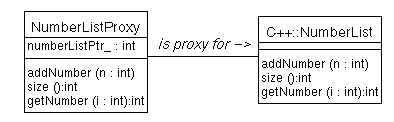
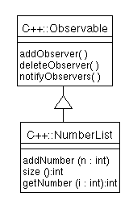
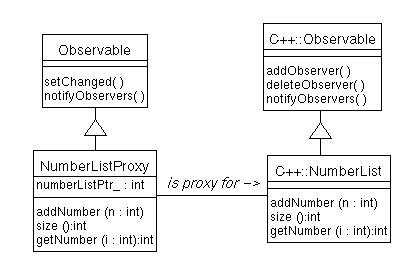
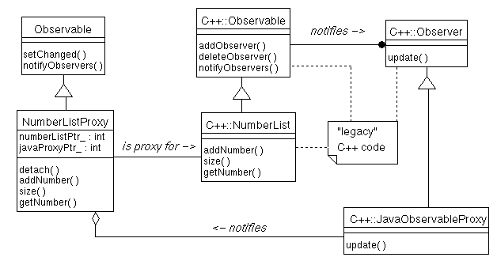
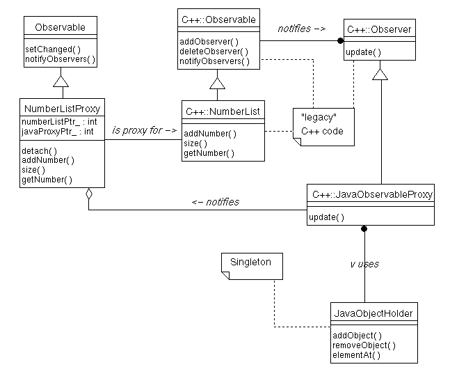

Summary
This article explores some of the issues involved in integrating C++ code into a Java program. It shows how to call from a Java object to a C++ object, and how to call from a C++ object to a Java object. Issues such as interaction with garbage collection are explored, and a simple framework for integrating Java and C++ is developed. Finally, current solutions are compared with what can be expected with JDK 1.1, as well as future offerings.
By Bill Foote
In this article, I'll discuss some of the issues involved in integrating C++ code with a Java application. After a word about why one would want to do this, and what some of the hurdles are, I'll build up a working Java program that uses objects written in C++. Along the way, I'll discuss some of the implications of doing this (such as interaction with garbage collection), and I'll present a glimpse of some of what we can expect in this area in the future.
Why would you want to integrate C++ code into a Java program in the first place? After all, the Java language was created, in part, to address some of the shortcomings of C++. While this is true, there are several reasons why you might want to integrate C++ with Java:
If you take the plunge and decide to integrate Java and C++, you give up some of the important advantages of a Java-only application, however. Namely:
As you can see, integrating Java and C++ is not for the faint of heart! If you stilll want to proceed, however, read on...
We'll start with a simple example showing how to call C++ methods from Java. We'll then extend this to show how to support the Observer pattern. The observer pattern, in addition to being one of the cornerstones of OO Programming, serves as a nice example to bring out the more involved issues in integrating C++ and Java code. We'll then build a small program to test our Java-wrapped C++ object, and we'll end with a discussion of future directions for Java.
What's so hard about integrating Java and C++, you ask? After all, Sunsoft's Java Tutorial has a section on integrating native methods into Java programs. As we'll see, this is adequate for calling C++ methods from Java, but it doesn't give us enough to call Java methods from C++. To do that, we'll need to do a little more work.
As an example, we'll use take simple C++ class that we'd like to use from within Java. We'll assume that this class already exists, and that we're not allowed to change it. This class is called "C++::NumberList" (for clarity, I'll prefix all C++ class names with "C++::"). This class implements a simple list of numbers, with methods to add a number to the list, query the size of the list, and to get an element from the list. We'll make a Java class whose job it is to represent the C++ class. This Java class, which we'll call NumberListProxy, will have the same three methods, but the implementation of these methods will be to call the C++ equivalents. This is pictured in the following OMT diagram:

A Java instance of NumberListProxy needs to hold onto a reference to the corresponding C++ instance of NumberList. This is easy enough, if slightly non-portable: If we're on a platform with 32 bit pointers, we can simply store this pointer in an int. If we're on a platform that uses 64 bit pointers (or we think we might be in the near future), we can store it in a long. The actual code for NumberListProxy is straightforward, if somewhat messy. It uses the mechanisms from the Integrating Native Methods into Java Programs section of the Java Tutorial.
A first cut at the Java class looks like this:
public class NumberListProxy {
static {
System.loadLibrary("NumberList");
}
NumberListProxy() {
initCppSide();
}
public native void addNumber(int n);
public native int size();
public native int getNumber(int i);
private native void initCppSide();
private int numberListPtr_; // NumberList*
}
The static section is run when the class is loaded. System.loadLibrary() loads the named shared library, which in our case contains the compiled version of C++::NumberList. Under Solaris, it will expect to find the shared library "libNumberList.so" somewhere in the $LD_LIBRARY_PATH... Shared library naming conventions may differ in other operating systems.
Most of the methods in this class are declared as "native." This means that we will provide a C function to implement them. To write the C functions, we run javah twice, first as "javah NumberListProxy," then as "javah -stubs NumberListProxy." This automatically generates some "glue" code needed for the Java runtime (which it puts in NumberListProxy.c), and generates declarations for the C functions that we are to implement (in NumberListProxy.h).
I chose to implement these functions in a file called NumberListProxyImpl.cc. It begins with some typical #include directives:
//
// NumberListProxyImpl.cc
//
//
// This file contains the C++ code that implements the stubs generated
// by "javah -stubs NumberListProxy". cf. NumberListProxy.c.
#include <StubPreamble.h>
#include "NumberListProxy.h"
#include "NumberList.h"
<StubPreamble.h> is part of the JDK, and includes a number of important system declaration. NumberListProxy.h was generated for us by javah, and includes declarations of the C functions we're about to write. NumberList.h contains the declaration of the C++ class NumberList.
In the NumberListProxy constructor, we call the native method initCppSide(). This method must find or create the C++ object we want to represent. For the purposes of this article, I'll just heap-allocate a new C++ object, although in general we might want to instead link our proxy to a C++ object that was created elsewhere. The implementation of our native method looks like this:
void NumberListProxy_initCppSide(struct HNumberListProxy *javaObj)
{
NumberList* list = new NumberList();
unhand(javaObj)->numberListPtr_ = (long) list;
}
As described in the tutorial, , we're passed a "handle" to the Java NumberListProxy object. Our method creates a new C++ object, then attaches it to the numberListPtr_ data member of the Java object.
Now on to the interesting methods. These methods recover a pointer to the C++ object (from the numberListPtr_ data member), then invoke the desired C++ function.
void NumberListProxy_addNumber(struct HNumberListProxy* javaObj,long v)
{
NumberList* list = (NumberList*) unhand(javaObj)->numberListPtr_;
list->addNumber(v);
}
long NumberListProxy_size(struct HNumberListProxy* javaObj)
{
NumberList* list = (NumberList*) unhand(javaObj)->numberListPtr_;
return list->size();
}
long NumberListProxy_getNumber(struct HNumberListProxy* javaObj, long i)
{
NumberList* list = (NumberList*) unhand(javaObj)->numberListPtr_;
return list->getNumber(i);
}
The function names (NumberListProxy_addNumber et al) are determined for us by javah. For more information on this, the types of arguments sent to the function, the unhand() macro, and other details of Java's support for native C functions, please refer to the tutorial.
While this "glue" is somewhat tedious to write, it's fairly straightforward, and works well. But what happens when we want to call from C++ to Java?
Before delving into how to call Java methods from C++, let me explain why this can be necessary. In the diagram I showed earlier, I didn't show the whole story of the C++ class. A more complete picture of the C++ class is shown below:

As you can see, we're dealing with an observable number list. This number list might be modified from many places (from NumberListProxy, or from any C++ object that has a reference to our C++::NumberList object). NumberListProxy is supposed to faithfully represent all of the behavior of C++::NumberList; this should include notifying Java observers when the number list changes. In other words, NumberListProxy needs to be a subclass of java.util.Observable, as pictured here:

It's easy enough to make NumberListProxy a subclass of java.util.Observable, but how does it get notified? Who will call setChanged() and notifyObservers() when C++::NumberList changes? To do this, we'll need a helper class on the C++ side. Luckily, this one helper class will work with any Java observable. This helper class needs to be a subclass of C++::Observer, so it can register with C++::NumberList. When the number list changes, our helper class's update() method will be called. The implementation of our update() method will be to call setChanged() and notifyObservers() on the Java proxy object. In OMT:

Before going into the implementation of C++::JavaObservableProxy, let me mention some of the other changes.
NumberListProxy has a new data member: javaProxyPtr_. This is a pointer to the instance of C++JavaObservableProxy. We'll need this later when we discuss object destruction. The only other change to our existing code is a change to our C function NumberListProxy_initCppSide(). It now looks like this:
void NumberListProxy_initCppSide(struct HNumberListProxy *javaObj)
{
NumberList* list = new NumberList();
struct HObservable* observable = (struct HObservable*) javaObj;
JavaObservableProxy* proxy = new JavaObservableProxy(observable, list);
unhand(javaObj)->numberListPtr_ = (long) list;
unhand(javaObj)->javaProxyPtr_ = (long) proxy;
}
Note that we cast javaObj to a pointer to an HObservable. This is OK, because we know that NumberListProxy is a subclass of Observable. The only other change is that we now create a C++::JavaObservableProxy instance, and maintain a reference to it. C++::JavaObservableProxy will be written so that it notifies any Java Observable when it detects an update, which is why we needed to cast HNumberListProxy* to HObservable*.
With this background, it seems simple. We just need to implement C++::JavaObservableProxy:update() to notify a Java observable. This is conceptually simple, but there's a snag: How do we hold on to a reference to a Java object within a C++ object?
It might seem like we could simply store a handle to a Java object within a C++ object. If this were so, we might code C++::JavaObservableProxy like this:
class JavaObservableProxy public Observer {
public:
JavaObservableProxy(struct HObservable* javaObj, Observable* obs) {
javaObj_ = javaObj;
observedOne_ = obs;
observedOne_->addObserver(this);
}
~JavaObservableProxy() {
observedOne_->deleteObserver(this);
}
void update() {
execute_java_dynamic_method(0, javaObj_, "setChanged", "()V");
}
private:
struct HObservable* javaObj_;
Observable* observedOne_;
};
Unfortunately, it's not so simple. When Java passes you a handle to a Java object, it will remain valid for the duration of the call. It will not necessarily remain valid if you store it on the heap, and try to use it later. Why is this so? Because of Java's garbage collection.
First of all, we're trying to maintain a reference to a Java object, but how does the Java runtime know we're maintaining that reference? It doesn't. If no Java object has a reference to the object, the garbage collector might destroy it. In this case, our C++ object would have a dangling reference to an area of memory that used to contain a valid Java object, but now might contain something quite different.
Even if we're confident that our Java object won't get garbage collected, however, we still can't trust a handle to a Java object after a time. The garbage collecter might not remove the Java object, but it could very well move it to a different location in memory! The Java spec contains no guarantee that this will not happen. Sun's JDK 1.0.2 (at least under Solaris) won't move Java objects in this way, but there are no guarantees for other runtimes.
What we really need is a way of informing the garbage collector that we plan to maintain a reference to a Java object, and ask for some kind of "global reference" to the Java object that's guaranteed to remain valid. Sadly, JDK 1.0.2 has no such mechanism (but one will probably be available in JDK 1.1 -- see the end of this article for more information on future directions). While we're waiting, we can kludge our way around this problem.
To safely keep references to Java objects, we can simply store the references in a Java vector. If we make this vector part of a singleton object that's globally available, the list will never get garbage collected, and we'll be able to get to the list from C++. Within a C++ object, the "reference" to the Java object can actually be an index into the singleton Vector. In my example, I've called the class that maintains this vector JavaObjectHolder. The structure of our entire system is shown below:

JavaObjectHolder is a straightforward Java class. It simply has methods to add an object (returning its index), remove an object, and get an object. For simplicity, I made these methods static. The declarations of the methods look like this:
class JavaObjectHolder {
public static int addObject(Object o) {
...
}
public static void removeObject(int handle) {
...
}
public static Object getObject(int handle) {
...
}
}
(The complete source of this class, including exception specifications, can be found at the end of this article).
Now that we have a way of maintaining references to Java objects, we're in a position to actually implement C++::JavaObservableProxy. The header is straightforward:
#if !defined(JavaObservableProxy_h)
#define JavaObservableProxy_h
#include "Observer.h"
#include "Observable.h"
class JavaObservableProxy : public Observer {
public:
JavaObservableProxy(struct HObservable* javaObj, Observable* obs);
~JavaObservableProxy();
void update();
private:
int javaObjectId_;
Observable* observedOne_;
};
#endif
Within the implementation file (JavaObservableProxy.cc), we first define a convenience function to get us the class descriptor of the JavaObjectHolder class:
static ClassClass* javaObjectHolder()
// Give a pointer to the class descriptor for JavaObjectHolder
{
static ClassClass* result = 0;
if (result == 0) {
result = FindClass(0, "JavaObjectHolder", TRUE);
assert(result != 0);
}
return result;
}
This is faster than calling the Java library function FindClass() each time.
Next, we need to write the constructor. The constructor simply calls JavaObjectHolder.addObject to convert the handle into an integer that's safe to store on the heap:
JavaObservableProxy::JavaObservableProxy(
struct HObservable* javaObj,
Observable* obs)
{
javaObjectId_ = execute_java_static_method(
0, javaObjectHolder(), "addObject",
"(Ljava/lang/Object;)I",
javaObj);
observedOne_ = obs;
observedOne_->addObserver(this);
}
When the C++::JavaObservableProxy is destroyed, we'll need to have the matching call to javaObjectHolder.removeObject()...
JavaObservableProxy::~JavaObservableProxy()
{
observedOne_->deleteObserver(this);
execute_java_static_method(
0, javaObjectHolder(), "removeObject", "(I)V", javaObjectId_);
javaObjectId_ = -1;
}
Finally, we have all of the infrastructure we need, and all that's left is to implement C++::JavaObservableProxy::update()...
void JavaObservableProxy::update()
{
HObject* javaObj = (HObject*)
execute_java_static_method(
0, javaObjectHolder(), "getObject", "(I)Ljava/lang/Object;",
javaObjectId_);
// If an exception occurred, get back to the Java runtime, because
// invoking another method would clear the exception flag.
if (exceptionOccurred(EE()))
return;
execute_java_dynamic_method(0, javaObj, "setChanged", "()V");
if (exceptionOccurred(EE()))
return;
execute_java_dynamic_method(0, javaObj, "notifyObservers", "()V");
}
This method gets a handle to the Java proxy (by calling JavaObjectHolder.getObject()), then executes setChanged() and notifyObservers() on the Java object.
In this discussion, we've created a number of instances, but we haven't said anything about how to clean them up. Remember, this is C++, and we need to manually dispose of the objects we create!
An obvious place to dispose of the C++ objects we create would be within the finalize() method of NumberListProxy. Unfortunately, it won't work. It won't work because there is a circular reference: NumberListProxy maintains a reference to C++::JavaObservableProxy, and C++::JavaObservableProxy maintains a reference to NumberListProxy (by going through the static Vector inside JavaObjectHolder). There is no way for Java's GC to detect this circular reference, so NumberListProxy instance will never be collected.
To get around this, we must resort to manual memory management. We add a method called "detach()" to NumberListProxy. When the Java side is done with a NumberListProxy instance, it must call NumberListProxy.detach(). This method can free all of the C++ instances that are created. (Some languages support a concept called "weak references" that can solve problems of this nature in an automatic fashion. Weak references are not a part of Java, and a discussion of them would be beyond the scope of this article.)
To demonstrate the system we've just developed, I created a simple application to exercise it. This application creates a number list, establishes an observer, and adds a few numbers to the list. Whenever a number is added, the observer is notified, and it prints a message to stdout. The Java observer is quite simple:
import java.util.*;
class NumberListObserver implements Observer {
NumberListObserver(NumberListProxy subject) {
subject_ = subject;
subject.addObserver(this);
}
/**
* Called when the subject changed
* @param o not used
* @param arg not used
**/
public void update(Observable o, Object arg) {
synchronized (subject_) { // Don't want size() to change under us!
int sz = subject_.size();
System.out.print(" The list now has: ");
for (int i = 0; i < sz; i++) {
if (i > 0)
System.out.print(", ");
System.out.print(subject_.getNumber(i));
}
}
System.out.println("");
}
private NumberListProxy subject_; // Thing being observed
}
and the main program looks like this:
import java.util.*;
class TestNumberList {
public static void main(String args[]) {
NumberListProxy model = new NumberListProxy();
NumberListObserver obs = new NumberListObserver(model);
System.out.println("Adding 3 to the list...");
model.addNumber(3);
System.out.println("Adding 42 to the list...");
model.addNumber(42);
System.out.println("Adding 666 to the list...");
model.addNumber(666);
System.out.println("Adding 7 to the list...");
model.addNumber(7);
model.deleteObserver(obs);
model.detach();
}
}
Running the program yields this output:
billf@pluto:~/javaC++Article/src$ java TestNumberList
Adding 3 to the list...
The list now has: 3
Adding 42 to the list...
The list now has: 3, 42
Adding 666 to the list...
The list now has: 3, 42, 666
Adding 7 to the list...
The list now has: 3, 42, 666, 7
In their recent announcement, JavaSoft informs us that JDK 1.1 will have a "New Java Native Method Interface." Hopefully, this new interface will provide a mechanism for getting a global reference to a Java object.
Netscape has comprehensive documentation on their JRI Native Method Interface. JRI ships with Netscape 3.0, and it provides everything we need in the way of registering global references. Unfortunately, it's only implemented by Netscape. Hopefully, JavaSoft will implement something similar (if not exactly the same... Dare I hope that the JDK 1.1 will have something along the lines of Netscape's JRI?)
ILOG has announced a project called TwinPeaks (being developed with JavaSoft). This promises to "Deliver Internet-Ready C++ Business Application Components to Developers and Customers." I expect that this means that they'll automate the writing of some of the glue code that we wrote by hand in this article. It will probably include other useful tools (perhaps a debugger that can step from Java into C++?).
If you'd like the complete source code for the program developed in this article (complete with Solaris Makefile!), click for javaAndC++.tar.gz, or for javacpp.zip. If you'd just like to browse, here are all of the source files:
Integrating C++ classes into a Java application is fairly straightforward, if somewhat messy. We expect the standard native method API's to improve in the fairly near future. Once this happens, the general approach outlined in this article will continue to work, but the implementation will be easier (and performance will be better).
Accessing C++ from Java can be worth the inconvenience. It opens up large bodies of "legacy" C++ code to potential re-use within Java applications. It also lets us exploit the power of C++, where C++ has an advantage (i.e. in performance (at least for now), in directly accessing hardware or doing other low-level activities, etc.). With this power comes danger, however: We lose the pointer-safety that Java provides us, so we open ourselves to memory-corruption bugs. In other words, integrating C++ with Java can be a powerful technique, but use it with care!